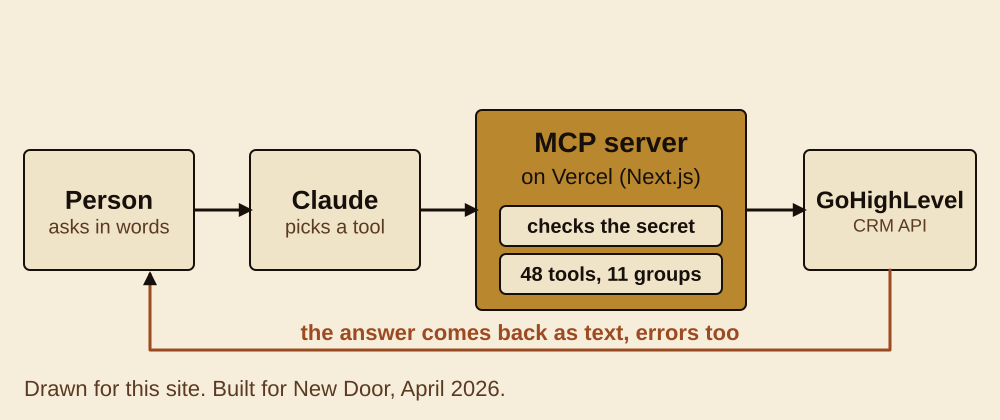
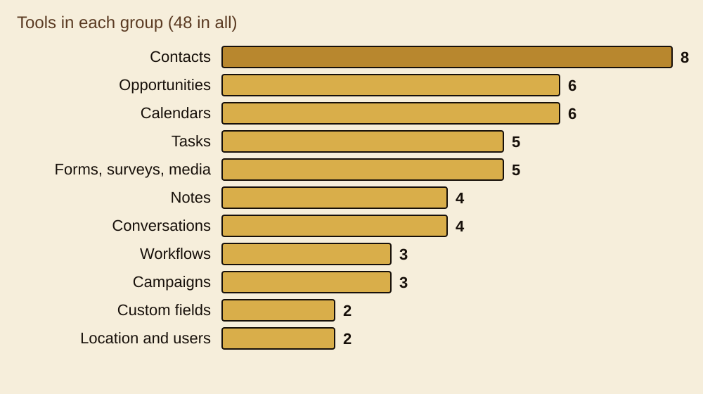
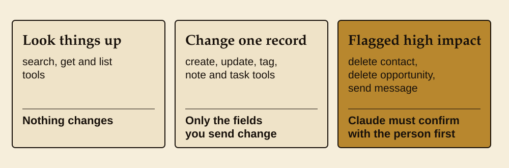

AI tool
Claude for GoHighLevel
A connector that lets Claude read and work inside a GoHighLevel CRM.
- Private repo

In numbers
- 48tools Claude can use in the CRM
- 11groups, from contacts to calendars
- 24 + 24tools that look things up, and tools that change something
- 3days from first commit to the full toolset
The problem
A real estate team lives in its CRM: contacts, deals, notes, tasks, calendars and messages. Finding something there takes clicks through several screens, and updating a lot of records means doing it one by one.
Claude can already read and write well. What it lacked was a way into GoHighLevel, the CRM the New Door team uses.
The approach
MCP, the Model Context Protocol, is the standard way to give Claude tools. I built an MCP server that wraps the GoHighLevel API. Each thing the CRM can do became a tool with a name, a description and a typed input, so Claude can pick the right one from a plain request.
It is a small Next.js app written in TypeScript and hosted on Vercel. Claude connects to it as a custom connector, and one endpoint serves every tool.
How it works
A person asks Claude something like "who did we tag as 1031 last week?" Claude chooses a tool, fills in its input, and sends the call to the server. The server checks the shared secret, calls the GoHighLevel API with the account token, and returns the result as text. If the API refuses, the error comes back the same way, so Claude can explain what went wrong.

What one tool looks like
Every tool is described to Claude in plain words and has a typed input. This is the contact search, from the real code, with the descriptions trimmed.
search_contacts query text to match on name, email or phone limit 1 to 100, default 20 startAfter paging: from the last reply startAfterId paging: from the last reply
Lists come back a page at a time. The reply says where the next page starts, and Claude passes that back in to keep going.
Care with actions that cannot be undone
Half the tools only look things up. The other half change something. Three are marked in their titles as destructive or high impact: deleting a contact, deleting an opportunity, and sending an SMS or email. The description of each tells Claude to confirm with the person first. Sending a message goes to a real lead right away, so it is never a draft.

Keeping it private
The endpoint needs a shared secret, sent as a bearer token, and the server compares it in constant time. The CRM token and location id live in the host’s environment settings, never in the code. A small status page on the server shows whether each setting is present without showing its value.
Results
The New Door team got a connector with the whole CRM behind it: 48 tools across 11 groups, 24 that read and 24 that change something. It was built in about three days, from the first commit on April 21 to the last on April 23, 2026, in four commits.
Every tool, by group
| Group | Count | Tools |
|---|---|---|
| Contacts, look up | 2 | search_contacts, get_contact |
| Contacts, change | 6 | create_contact, update_contact, upsert_contact, delete_contact, add_contact_tags, remove_contact_tags |
| Opportunities | 6 | list_opportunities, get_opportunity, get_pipelines, create_opportunity, update_opportunity_stage, delete_opportunity |
| Notes | 4 | list_contact_notes, create_note, update_note, delete_note |
| Tasks | 5 | list_contact_tasks, create_task, update_task, complete_task, delete_task |
| Conversations | 4 | search_conversations, get_conversation, get_conversation_messages, send_message |
| Calendars | 6 | get_calendars, list_calendar_events, get_calendar_free_slots, create_appointment, update_appointment, delete_appointment |
| Workflows | 3 | list_workflows, add_contact_to_workflow, remove_contact_from_workflow |
| Campaigns | 3 | list_campaigns, add_contact_to_campaign, remove_contact_from_campaign |
| Custom fields and values | 2 | list_custom_fields, list_custom_values |
| Location and users | 2 | get_location, list_users |
| Forms, surveys and media | 5 | list_forms, list_form_submissions, list_surveys, list_survey_submissions, list_media |
The repo is private and the data in the CRM is the team’s own, so there are no screenshots of real records on this page.
What I did
- Built an MCP server with 48 tools that lets Claude work inside a GoHighLevel CRM.
- Built it for the New Door team.
- Added confirmation rules on the tools that delete data or send messages.
- Protected the endpoint with a shared secret and kept every token in settings, out of the code.
What I learned
Good tool descriptions matter as much as the code. Claude chooses tools by reading them, so each one says what it returns, what it needs, and what to check first.
Mark the dangerous tools plainly. A tool that sends a real message needs a loud name and an instruction to confirm, because nothing downstream can unsend it.
Start with a small set and grow it. The server began with a handful of tools and grew to the full CRM surface once the pattern worked.